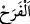

Sonra Allah Teâlâ, bazısı için zenginliği, bâzısı için fakirliği iyilik kılmıştır.
Bazılarının zenginliğinde -fakirlik gibi- fesad yaratmıştır. Bunların tamamında bir
hikmet ve maslahat vardır.
Hâfız şöyle der:
Bu iki kapılı kervansaraydan mâdem ki ayrılmak zarûrîdir
Maîşetin kemeri yüksek olmuş alçak olmuş ne farkı var
Vara yoğa hatırını incitme, gönlü hoş ol
Zira var olan her kemâlin âkıbeti yokluktur
Kol kanat sebebiyle yoldan çıkma
Çünkü uzağa atılan ok bir müddet yukarı gider
“Onlar” Mekke müşrikleri “dünya hayatıyla” yani, dünya hayatında kendilerine bol
bol verilen şeylerle “şımardılar.” Ama Allah’ın fazl u in’âmından sevinç duyup
şükretmek tarzında değil, aksine şımarıp böbürlenme tarzında sevindiler.
“
/sevinç”, arzu edilen bir şeye ulaşmaktan dolayı kalbde hâsıl olan tattır.
Bu âyette dünyalıklarla böbürlenip sevinmenin haram olduğuna delil vardır.
Renk, koku ve mekân ile övünmekte
Çocukları sevindirip aldatmak vardır
“De ki: “Ancak Allah’ın lütuf ve rahmetiyle, işte bunlarla sevinsinler.” (Yunus,
10/58) âyetinin açıklaması sadedinde Şerhu’l-Hikem’de şöyle der: Kulun sevinmesi
tamamen yasaklanmamıştır. Çünkü sevinç ortadan kaldırılması imkânsız olan ve uygun
bir tarafa yönlendirilmesi gereken beşerin ayrılmaz özelliklerindendir. Tamah, hırs,
cimrilik, şehvet, öfke ve buna benzer tüm insana âid huylar da böyledir. Bunların
değişmesi mümkün olmayıp sadece uygun bir yöne çevirilmesi doğru olur. Bu sâyede
ancak uygun olan yerde kullanılmış olurlar.
“Oysa âhiretin yanında dünya hayâtı,” çobanın azığı ve süvârîlerin alelacele
atıştırdıkları birkaç hurma veya kurutulmuş un çorbası ve benzerleri gibi kendisinden
çok az faydalanılan “geçici bir faydadan başka bir şey değildir.”
“Âhirette” ifadesi ne hayatın ne de dünyanın zarfıdır. Çünkü bunlar âhirette vuku
bulmazlar. Aksine hâl olup ibârenin takdîri şöyledir: ‘Şu yaşanmakta olan hayat, âhiret
hayatının yanında, ona kıyasla çok az geçici bir faydadan ibârettir.’
Sâhib b. Abbâd der ki: Bir kabîleye mensup bir kadının: “Metâ‘ nerede!?” diye
sorduğunu duydum. Küçük oğlu da bu soruya şöyle cevap vermişti:
“Köpek geldi ve onu aldı.”
Burada metâ‘ su ile ıslatılan ve kendisi ile tas tabak silinen bez mânâsındadır. Metâ’ın
bu mânâsına göre âyette dünyanın durumu kınanmaktadır.
Kâşifî der ki: “Metâ” tas, tencere ve bardak gibi biraz kullanıldıktan sonra eskiyip